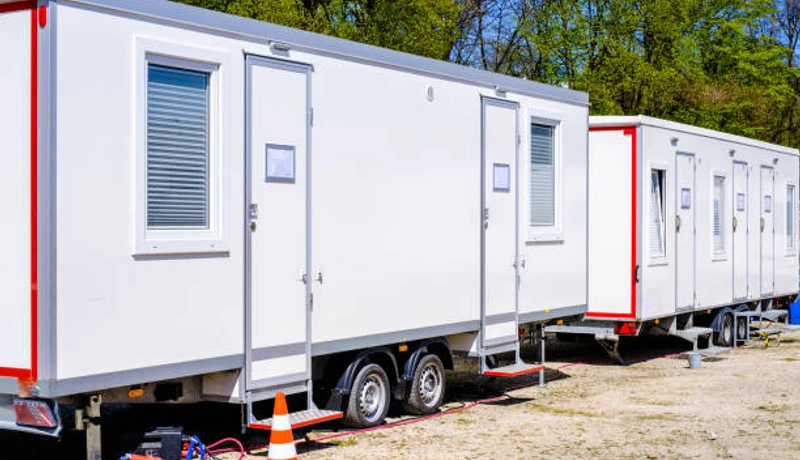
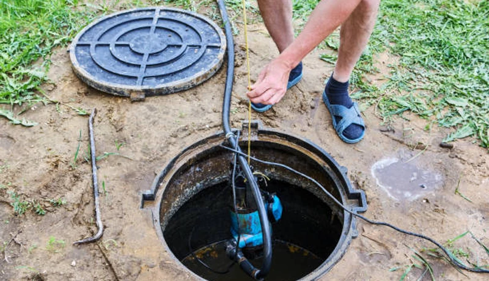

Event Planning
Porta Potty Logistics for Ironbound Street Festivals
Kitchen remodels, bathroom renovations, and additions in Newark County go smoother with a porta potty on-site. Here's what Newark homeowners need to know.
Searching for porta potty rental near me in Newark? From heavy construction along Broad Street to vibrant outdoor festivals in the Ironbound, we deliver pristine, fully stocked portable toilets directly to your site. Same-day delivery available across Essex County.
Skip the hold music. Speak directly to our local Newark dispatchers right now to secure your units.
No forms. No callbacks. Talk to a real dispatcher right now and lock in delivery.
Not sure how many units? Use our free porta potty calculator.
Need units near Rutgers-Newark by noon? We dispatch rapidly across the city.
Heavy-duty, tip-resistant units engineered for the toughest Downtown job sites.
Every rental arrives sanitized, restocked, and smelling fresh—100% guaranteed.
Licensed, insured, and deeply familiar with Newark's streets and regulations.
Whether you are breaking ground on a new high-rise in the Central Ward or hosting a massive food festival in the Ironbound, we have the precise sanitation equipment to keep your Newark project compliant and comfortable.

Newark County construction porta potties: OSHA 29 CFR 1926.51 compliant, same-day delivery to Downtown Newark and North Newark, weekly service included. Newark site supervisors get clean units and zero paperwork hassle.
Get a Quote
Upscale restroom trailers for Newark County events from Downtown Newark fundraisers to Newark Fairgrounds-area galas. Climate-controlled, beautifully appointed, and delivered same-day to Newark venues.
Get a Quote
Wheelchair-accessible units for Newark County construction and Newark public gatherings. Extra turning radius, grab bars, and accessible seat height — ANSI A117.1 compliant for North Newark events.
Get a Quote
Budget-friendly Newark standard units delivered same-day to Downtown Newark and North Newark in Newark County. Weekly service and OSHA compliance documentation included for all Newark orders.
Get a Quote
Standalone hand wash stations for Newark food events and Newark County construction near Newark Convention Center. Fresh water tank, soap, paper towels — essential for Downtown Newark and North Newark events.
Get a Quote
Specialized lifting setups for Downtown Newark high-rise construction. Keep your crews productive without having them travel to the ground floor.
Get a Quote
Climate-controlled event trailers for Newark festivals and Newark Convention Center-area gatherings in Newark County. Multiple stall configurations for crowds from 100 to 5,000+ at Downtown Newark venues.
Get a Quote Get a Quote
Septic pump-out and holding tank service for Newark construction sites in Newark County. Emergency pumping for Downtown Newark and North Newark properties — 24/7 availability from our Newark team.
Get a Quote
Premium flushable units for Newark County outdoor events: real flushing action, fresh water, mirror, interior lighting. Popular for Newark events in South Newark and near Newark Fairgrounds where standard units fall short.
Get a Quote
Same-day emergency rentals for Newark — available 24/7 for Downtown Newark, North Newark, and all of Newark County. Call (833) 652-9344 any time; our Newark dispatcher answers live and confirms delivery.
Get a Quote
Highly mobile units mounted securely to road-legal trailers. Ideal for municipal road crews and highway infrastructure projects across Essex County.
Get a Quote Get a Quote
Five-star mobile restroom experience for Newark black-tie events near Newark Convention Center. Premium flooring, fixtures, and lighting make this the obvious choice for Downtown Newark and North Newark upscale events.
Get a QuoteWhy do top-tier contractors and event coordinators in Newark choose us? Because we treat portable sanitation as a critical logistics operation, not an afterthought.
Navigating one-way streets in the Ironbound or securing permits near the Prudential Center requires local expertise. We bypass the red tape and deliver exactly when promised.
A porta potty is only as good as its maintenance. Our route drivers in Essex County use GPS-tracked logs to ensure your weekly job site pump-outs happen flawlessly.
We don't just rinse out our units. We pressure wash, sanitize with medical-grade disinfectants, and apply long-lasting odor controllers so they arrive completely immaculate.
We provide specialized, high-volume sanitation compliance for Essex County's biggest sectors.
From retail developments in the Central Ward to warehouse expansions near the Port of Newark. We deliver weekly-serviced standard units, high-rise lift kits, and holding tanks scaled exactly to your crew size to ensure 100% OSHA 1926.51 compliance.
Newark hosts some of New Jersey's most vibrant cultural events. Whether it's the Portugal Day Festival in the Ironbound or a summer concert in Branch Brook Park, we deploy fleets of clean portable toilets and luxury VIP trailers to handle thousands of guests smoothly.
We are a trusted partner for roadwork crews, utility repair teams, and public parks departments across Essex County. We offer highly visible, trailer-mounted porta potties that move with your paving and repair crews without slowing down operations.
Newark is a dynamic Newark County community where construction activity, outdoor events, and residential growth create year-round demand for reliable portable sanitation. From the corridors near Newark Convention Center to the neighborhoods of Downtown Newark, North Newark, and South Newark, every part of Newark County has a reason to call FixPilot — construction sites, events, or emergency backup near Newark Fairgrounds.
Our Newark depot enables rapid same-day delivery to Downtown Newark and all of Newark County.
Construction and event delivery to North Newark — same-day available throughout Newark County.
Serving South Newark residential and commercial projects with OSHA-certified units.
Luxury restroom trailers and standard units for events and construction in Newark Heights.
Same-day delivery to Newark Park and all surrounding Newark County communities.
Serving contractors and event planners in East Newark and throughout Newark County.
Reliable porta potty service to West Newark, Downtown Newark, and all of Newark County.
We also provide fast, reliable service to contractors and residents in these nearby Newark County communities:
*Prices may vary by duration and location in Newark County. Call for exact quote.
Get Your Free Newark Quote2026 Rental Cost Guide
Standard, deluxe & luxury pricing explained
How Many Units Do You Need?
Calculate the right number for your event or site
OSHA Compliance Guide
Requirements for construction sites
Construction Site Services
OSHA-compliant units for job sites
Luxury Restroom Trailers
VIP-grade trailers for weddings & events
Free Quote Calculator
Get an instant estimate in 60 seconds
Newark and Newark County represent a balanced portable sanitation market: neither purely construction-driven nor purely event-driven, but genuinely active in both. The Downtown Newark commercial district and North Newark development corridor sustain construction demand. The Newark Fairgrounds event venue zone and South Newark hospitality corridor drive event demand. Newark Heights and Newark Park add the residential renovation market. FixPilot's Newark County inventory handles all three concurrently.
Construction near Newark Convention Center represents Newark County's highest-complexity delivery environment. Projects along the Downtown Newark corridor include high-rises requiring crane-hook units, mixed-use developments needing multiple access zones, and infrastructure work alongside active Newark traffic. Our drivers know these sites, and our Newark County dispatch team coordinates with Downtown Newark and North Newark site supervisors daily to ensure seamless delivery and service.
Newark's event market has expanded with Newark County's population and economic growth. The Newark Fairgrounds district, South Newark outdoor venues, Newark Heights private event spaces, and the Downtown Newark hospitality corridor now host events year-round that require professional portable sanitation management. Our Newark County luxury trailer fleet, ADA-compliant units, and event-servicing team exist because Newark's event market demanded a vendor that could match the quality of the events being produced.
Newark's Newark County construction market is driven primarily by residential construction, community events, and commercial development centered around Newark Convention Center and extending throughout the Downtown Newark and North Newark development corridors. Active job sites in South Newark and Newark Heights keep a consistent contractor workforce active in Newark County year-round, generating steady demand for OSHA-compliant portable restrooms with documented weekly service schedules. FixPilot maintains dedicated Newark County inventory to serve same-day construction deliveries to Downtown Newark, North Newark, and every active construction zone in the Newark metro. The Newark Convention Center corridor represents the highest-demand construction zone in Newark County, where projects range from commercial mixed-use development to infrastructure upgrades along the Newark Park perimeter.
Newark's event market is anchored by annual gatherings near Newark Fairgrounds and throughout the Downtown Newark and South Newark entertainment corridors in Newark County. The seasonal event calendar — outdoor concerts, community festivals, weddings at venues near Newark Convention Center, and Newark County civic gatherings — creates consistent premium portable sanitation demand from spring through fall. Luxury restroom trailers for upscale North Newark and Newark Heights event venues, standard units for large Newark County community gatherings, and ADA-compliant options for public events near Newark Fairgrounds are all part of FixPilot's Newark event service offering. The growing outdoor wedding venue market in Newark Park and South Newark reflects Newark's emergence as a destination for outdoor celebrations throughout Newark County.
Contractors working in Downtown Newark, event planners organizing gatherings near Newark Fairgrounds, and homeowners in Newark Heights and Newark Park managing Newark renovation projects choose FixPilot over competitors because our Newark County-based operation delivers local expertise that national vendors cannot provide. We know the delivery windows, access requirements, and permit procedures for construction sites near Newark Convention Center and throughout the North Newark development corridor. Our Newark County dispatch team answers every call — no automated systems, no call centers routing your Newark order through another state. Same-day delivery is standard, not a premium, for all of Newark County.
Dial our number and tell us about your project in Newark. Whether it’s a residential remodel in Roseville or a festival on Ferry Street, we’ll recommend the exact units you need.
We give you a transparent, all-inclusive quote. Then, our dispatchers coordinate a precise delivery window so the porta potties arrive exactly when your Newark crew arrives.
Focus on your event or build. We handle the dirty work. We execute weekly servicing seamlessly, and when the job is done, we remove the units quickly, leaving no trace behind.
Porta Potty Rental in Jersey City
Learn More →Porta Potty Rental in Huntington
Learn More →Porta Potty Rental in New York City
Learn More →Porta Potty Rental in Jersey City
Learn More →Porta Potty Rental in New York City
Learn More →Helpful articles and local regulatory tips for planning your event or managing your construction site anywhere in Essex County.
Kitchen remodels, bathroom renovations, and additions in Newark County go smoother with a porta potty on-site. Here's what Newark homeowners need to know.

Newark County construction porta potties: OSHA 29 CFR 1926.51 compliant, same-day delivery to Downtown Newark and North Newark, weekly service included. Newark site supervisors get clean units and zero paperwork hassle.

Climate-controlled luxury trailers for Downtown Newark weddings and Newark Convention Center-area events in Newark County. Flushing toilets, running water, and premium finishes — guests never guess they're in a trailer.
Don't just take our word for it. Read reviews from real site managers and event planners right here in Essex County.
Karen L.
"Organized our neighborhood's annual block party near Newark Convention Center. FixPilot dropped off 3 units the morning of the event and retrieved them by evening."
Bob T.
"I've used FixPilot for four consecutive commercial renovation projects in Newark. Their reliability is what keeps me coming back — they show up when they say, service on schedule, and I've never had a tenant complaint about their units at any of my buildings."
Lisa M.
"Rented a single porta potty for our kitchen and bathroom remodel in Downtown Newark. Saved our household a ton of hassle and kept the construction crew out of our personal space."
Real answers for Newark customers. More questions? Call (833) 652-9344 anytime.
We offer same-day delivery throughout Newark and Newark County. Orders placed before 10 AM in Newark typically arrive by early afternoon. Our Newark County fleet covers Downtown Newark, North Newark, South Newark, and every active construction site and event venue in Newark. For urgent needs in Newark Heights or near Newark Convention Center, call (833) 652-9344 any time — a real Newark-area dispatcher answers.
Our Newark County service area covers all of Newark without exception — Downtown Newark, North Newark, South Newark, Newark Heights, Newark Park, and every community in between. We also serve adjacent counties when Newark County contractors and event planners need delivery beyond Newark city limits. No service zone restrictions, no delivery zone surcharges for any Newark address.
Yes — every unit placed at a Newark County construction site is certified to OSHA 29 CFR 1926.51. We include a compliance documentation package with every Newark construction order: worker-to-toilet ratios for your crew size, service frequency records, and positioning requirements for Downtown Newark and North Newark job sites. Eight consecutive years of OSHA audits for Newark County contractors, zero violations.
Newark porta potty rental starts at $75/day for standard units — including weekly Newark County service. Deluxe units with interior lighting run $100–125/day. ADA units for Newark permitted sites: $120/day. Luxury trailers for Downtown Newark and North Newark events: from $400/day. All rates include Newark County delivery. The rate quoted for your Newark project is the rate on your invoice — no surprises.
We're locally operated in Newark County — not a franchise dispatching from 500 miles away. Our inventory is staged in the Newark metro for genuine same-day delivery to Downtown Newark, North Newark, South Newark, and all of Newark County. Every unit is professionally cleaned. When you call (833) 652-9344 about a Newark Heights job site or Newark Convention Center-area event, you reach someone who knows Newark.
Yes — homeowner rentals in Newark are one of our most common orders. A single standard unit placed on your Downtown Newark or North Newark driveway keeps your construction crew out of your home's bathrooms during kitchen remodels, bathroom renovations, or additions in Newark County. Minimum one week; most Newark homeowners rent 3–6 weeks. Same-day delivery available throughout Newark County.
For private property in Newark — Downtown Newark driveways, North Newark yards, fenced Newark County construction sites — no permit is required. For placement on public Newark streets, South Newark sidewalks, or Newark County park property, a right-of-way permit from Newark Public Works is required (typically 3–7 days). We guide Newark County homeowners and contractors through the process.
For Newark neighborhood events in Downtown Newark, North Newark, and throughout Newark County, standard porta potties work well for casual gatherings of up to 200 people. Deluxe units with interior lighting and improved ventilation are a step up for South Newark and Newark Heights HOA events and outdoor fundraisers. Our Newark County team recommends the right unit count based on your Newark event's expected attendance.
Extensions for Newark County rentals are simple — just call (833) 652-9344 and we'll add days or weeks with no penalty. Our Newark service team continues weekly pump-outs at the same rate, and you're billed only for the additional time. We've extended Downtown Newark and North Newark construction rentals from 2 weeks to 6 months without any contract complication.
Yes — neighborhood block parties, HOA events, school carnivals, and community festivals in Downtown Newark, North Newark, South Newark, Newark Heights, and Newark Park are regular orders for our Newark team. No minimum order size, no event-planning complexity. One call to (833) 652-9344 and your Newark County community event has clean, properly maintained portable restrooms delivered and retrieved on your schedule.
Yes — projects and events near Newark Convention Center are among our most regular Newark County deliveries. Our Newark drivers know the delivery windows, vehicle access requirements, and site coordination protocols for the Newark Convention Center area. Same-day delivery is standard for Newark County locations near Newark Convention Center across Downtown Newark and North Newark. Call (833) 652-9344 for immediate availability confirmation.
Newark Fairgrounds and the surrounding South Newark corridor are a regular part of our Newark service calendar. We've provided construction porta potties and luxury restroom trailers for events ranging from small private gatherings to large public events near Newark Fairgrounds in Newark County. Delivery timing, access coordination, and permit guidance for Newark Fairgrounds-area projects are handled by our Newark team.
Our Newark emergency line (833) 652-9344 is answered live 24/7 — including nights, weekends, and holidays. Our Newark County on-call driver covers Downtown Newark, North Newark, South Newark, and the full Newark metro for after-hours emergencies. Whether it's a Newark Convention Center-area construction inspection failure or a last-minute event backup in Newark Heights, we dispatch immediately with no premium for after-hours service.